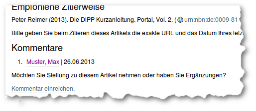
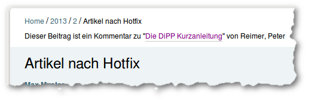

Kommentare¶
Kommentare zu Artikeln sollen dazu dienen eine Diskussion zu ermöglichen und sollten daher gewissen wissenschaftlichen Standard genügen. Zwar durchlaufen die Kommentare keinen Reviewprozess, technischen werden sie aber genauso behandelt wie der kommentierte Artikel selber, d.h. sie werden genauso formatiert und über die Editorial Toolbox konvertiert.
In der Standardkonfiguration ist die Kommentarfunktion deaktiviert. Um sie nutzen zu können muss im ZMI der Wert von allow_persistent_discussion auf „True“ gesetzt werden.

Ein Artikel mit angewandter Formatvorlage. Entwurfsansicht mit eingeblendeten Absatzformaten¶

Ein Artikel mit angewandter Formatvorlage. Entwurfsansicht mit eingeblendeten Absatzformaten¶